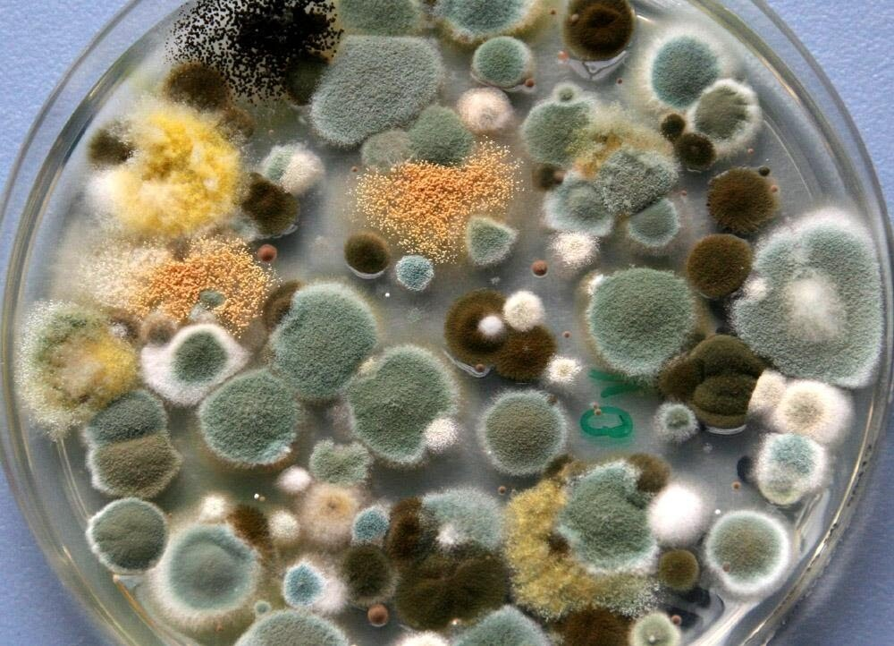

Molds

Molds are a diverse group of fungi that play crucial roles in ecosystems as decomposers, pathogens, and producers of enzymes and antibiotics. They are found in a wide range of habitats, including soil, air, water, and organic matter, and exhibit a remarkable diversity of forms, lifestyles, and ecological functions.
Key Characteristics
- 1. Filamentous Growth: Molds typically grow as multicellular, filamentous structures called hyphae, which form a network known as a mycelium. The mycelium penetrates and grows within the substrate, secreting enzymes to digest organic matter and absorb nutrients
- 2. Reproductive Structures: Molds produce reproductive structures such as spores or conidia, which are dispersed by wind, water, or animals. Spores are resistant to harsh environmental conditions and can survive for extended periods, facilitating the dispersal and survival of molds.
- 3. Ecological Roles: Molds play important roles as decomposers, breaking down dead organic matter and recycling nutrients such as carbon, nitrogen, and phosphorus in ecosystems. They also form symbiotic relationships with plants (mycorrhizae) and animals (e.g., gut fungi in termites) and can cause diseases in plants, animals, and humans.
Classification
Molds are classified into several taxonomic groups based on their morphological features, reproductive structures, and ecological characteristics:
- Zygomycota: Zygomycetes are characterized by their formation of resistant sexual spores (zygospores) through the fusion of specialized hyphae. They include bread molds (Rhizopus), mucor molds, and other fast-growing saprobes.
- Ascomycota: Ascomycetes are characterized by their production of sexual spores (ascospores) within sac-like structures called asci. They include molds such as Penicillium, Aspergillus, and Neurospora.
- Deuteromycota: Deuteromycetes, also known as fungi imperfecti, are a group of fungi for which sexual reproduction has not been observed. They include molds such as Trichoderma and Alternaria.
Habitat and Adaptations
Molds inhabit diverse habitats and exhibit various adaptations:
- Substrate Utilization: Molds are highly adaptable and can grow on a wide range of substrates, including organic matter, soil, wood, paper, textiles, and food. They can colonize both living and dead organic material and are often associated with moist or humid environments.
- Mycelial Growth: Molds grow rapidly through the extension of their hyphae, allowing them to colonize and exploit new resources efficiently. The mycelium secretes enzymes to break down complex organic molecules into simpler forms, which are then absorbed by the hyphae
- Spore Production: Molds produce vast numbers of spores or conidia, which are dispersed by various means to colonize new habitats and spread over long distances. Spores are resistant to desiccation, heat, and other environmental stresses, ensuring the survival and dispersal of molds.
Ecological and Economic Importance
Molds have both positive and negative impacts on ecosystems and human activities:
- Decomposition: Molds play crucial roles as decomposers, breaking down dead organic matter and recycling nutrients in ecosystems. They contribute to soil fertility, organic matter decomposition, and nutrient cycling, facilitating the growth of plants and other organisms.
- Pathogenesis: Some molds are plant pathogens that cause diseases in crops, ornamental plants, and forests. They can reduce crop yields, spoil harvested crops, and damage plant health, posing significant economic and agricultural challenges.
- Biotechnological Applications: Molds are used in various biotechnological applications, including enzyme production, biofuel production, food fermentation, and pharmaceutical production. They produce enzymes such as amylases, cellulases, proteases, and lipases, which are used in industries such as baking, brewing, cheese making, and detergent manufacturing.
Conservation and Management
Molds face threats from habitat loss, pollution, climate change, invasive species, and emerging diseases. Conservation efforts focus on preserving natural habitats, promoting sustainable land management practices, and studying the ecological roles and diversity of molds in different environments. Integrated pest management strategies are used to control mold diseases in agriculture and prevent food spoilage in food processing and storage.
Conclusion
Molds, with their diverse forms, ecological roles, and economic importance, are integral components of ecosystems and human activities. Whether breaking down organic matter, causing plant diseases, producing enzymes for biotechnology, or spoiling food products, molds have significant impacts on the environment, agriculture, industry, and public health. Understanding and managing molds is essential for maintaining ecosystem health, food security, and human well-being.